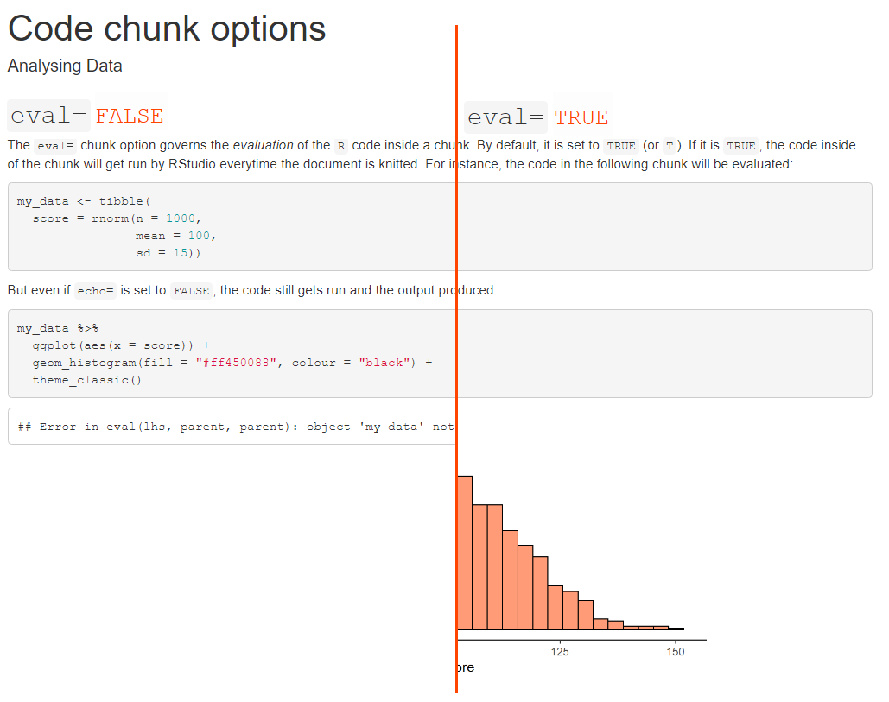
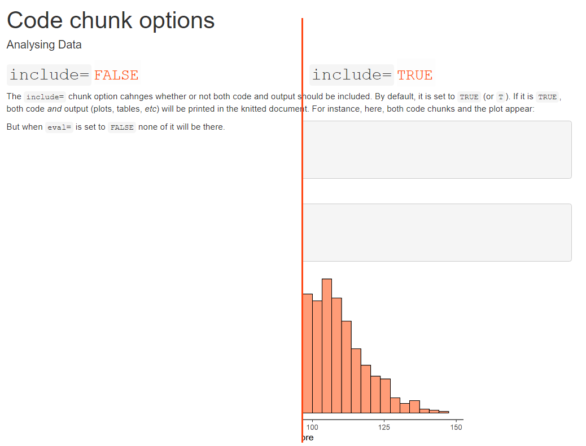

R Markdown again
Practical 2
Analysing Data
Today’s Goals
- Consolidate what you’ve learnt about R Markdown
- Closer look at code chunk options
- Further YAML arguments for customised documents
- Rmd tricks
- First steps towards writing papers/reports
Setup
Just like last time, before we start, make sure to:
- Log into OneDrive and Canvas
- Open RStudio via the Software Hub
- Open the Analysing Data project file
- Open the worksheet
- Download the R Markdown file into your r_docs folder in your R project
Question time
- Any questions about last weeks’ content before quiz?
Week 2 quiz
- 7 (9) minutes
- Marked
- Phones face down / away
- No talking
- Only physical calculator / desktop app allowed
Week 2 quiz
Get ready
Rmd code chunks
Chunk options
- Blocks of
Rcode fenced off using
```{r [optional label], [chunk options]}
[some R code]
```
- Labels are arbitrary
- Options change the look of the chunk’s result
- Different options are useful for different things
- We will only look at the three most commonly used
echo=

eval=

include=

Usage
include=F- For code whose output you never want to show
- e.g.,
library()calls, data processing and analysis code, or setup chunks
echo=F- When you want output but not the code
- e.g., plots and tables
eval=F;echo=T- When you want to demonstrate code but don’t want to run it (rarely)
Setting options globally
- The setup chunk that gets put into every new Rmd file can be edited to set global options
- You can just change/add the
echo=,eval=,include=, and other options
```{r setup, include = FALSE}
knitr::opts_chunk$set(echo = FALSE, include = FALSE)
```
Setting options locally
- Any individual code chunk can be given its own options
- This overrides any global options
- Even if
echo=is set globally toFALSE, the following chunk gets echoed in the knitted document
```{r demo_chunk, echo=T}
my_data <- tibble(
score = rnorm(n = 1000,
mean = 100,
sd = 15))
```
Using the YAML header
html_document: options
- Output format can be modified using options
- To do that,
html_document:must be on a new, indented line, followed by a colon: - Further options must be also on a new line and indented
---
title: "Code chunk options"
author: "Analysing Data"
output:
html_document:
option_1: some_value
option_2: some_value
---toc: true option
---
title: "Code chunk options"
author: "Analysing Data"
output:
html_document:
toc: true
---toc_float: true option
---
title: "Code chunk options"
author: "Analysing Data"
output:
html_document:
toc: true
toc_float: true
---number_sections: true option
---
title: "Code chunk options"
author: "Analysing Data"
output:
html_document:
number_sections: true
---theme: option
---
title: "Code chunk options"
author: "Analysing Data"
output:
html_document:
theme: darkly
---Take-home message
- Chunk options can change whether or not:
- Code chunks get echoed
- Code gets evaluated
- Code and output are included
- There are further options (see here)
- There are many YAML options to customise the formatting of the document, e.g.:
- Table of contents, including float
- Numbering of sections
- Themes
- Many other YAML options (see here)